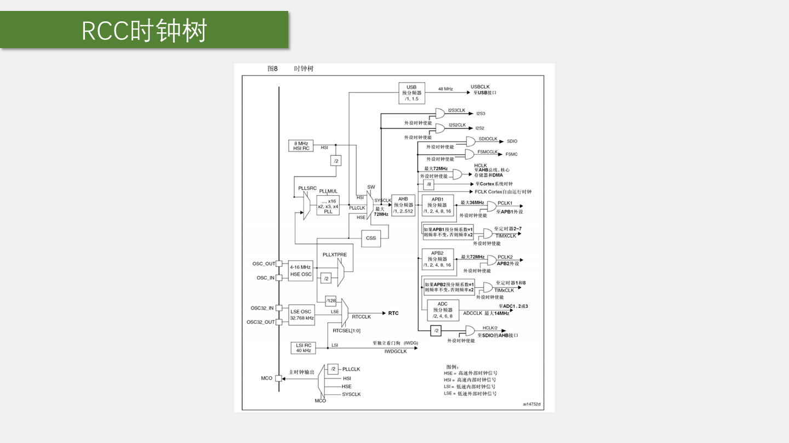

这一课要解决的问题
本课目标
读完你能：说出四个振荡源各自的用途；画出 HSE→PLL→SYSCLK 的完整路径；算出 AHB/APB1/APB2 的频率；解释为什么 APB1 只有 36MHz 而定时器仍按 72MHz 计算；知道 HSE 起振失败时会发生什么。
前四课你一直在说"72MHz"，但没问过它从哪来。这一课回答这个问题。
为什么值得花 80 分钟单独讲？因为时钟是所有外设的基准：定时长短、波特率、PWM 频率、ADC 采样率，全都从这个 72MHz 分频出来。时钟理解错了，后面每个外设都会跟着错，而且是那种"看起来能跑、数值差一点"的错，最难查。
1. 四个振荡源
STM32F103 内部有四个时钟源，分两组：
| 名称 | 全称 | 频率 | 位置 | 用途 |
|---|---|---|---|---|
| HSI | High Speed Internal | 8 MHz | 芯片内部 RC | 开机默认时钟，HSE 坏了的备份 |
| HSE | High Speed External | 4~16MHz（板上是 8MHz） | 外部晶振 | 系统主时钟的首选来源 |
| LSI | Low Speed Internal | 约 40 kHz | 内部 RC | 独立看门狗、RTC 备选 |
| LSE | Low Speed External | 32.768 kHz | 外部晶振 | RTC 实时时钟 |
两组的分工很简单：
- 高速组（HSI/HSE）：给 CPU 和外设提供动力，最终变成 72MHz。
- 低速组（LSI/LSE）：只服务"时间"相关的东西——看门狗计时、RTC 走秒，因为它们要在低功耗下继续工作。
为什么内部有 HSI 还要用外部 HSE
精度。
- HSI（RC 振荡器）：靠电阻电容充放电产生频率，成本低、启动快（微秒级），但精度只有 ±1%，而且随温度和电压漂移。
- HSE（石英晶振）：靠石英的机械谐振，精度可达 ±20ppm（即 0.002%），温漂极小。代价是要外部元件，启动慢（毫秒级）。
±1% 是什么概念？115200 波特率下，误差会累积到 1152 bit/s，串口一帧 10 位，收几十个字节就开始出错。所以做通信必须用 HSE。
另一个实际影响：HSI 在 −40~85℃ 范围内漂移可能超过 2%，用它做 RTC 一天能差几分钟。
蓝板上的两个晶振别搞混
- 8MHz 那个（靠近芯片、体积稍大）是 HSE，给系统时钟用。
- 32.768kHz 那个（圆柱形或小方块）是 LSE，给 RTC 用。
只做普通功能时 LSE 可以不焊、不配。这也是为什么有些精简板子只焊一个晶振。
2. 时钟树：从 8MHz 到 72MHz 的三步
这是本课最核心的图。把它看懂，RCC 章节就没难点了。
三步走：
第一步：选源。 HSI 或 HSE 进 PLL。我们选 HSE（8MHz）。
第二步：倍频。 PLL 把 8MHz 乘 9，得到 72MHz。这是 STM32F103 的最高主频。
第三步：分频。 SYSCLK 先过 AHB 预分频得到 HCLK（72MHz），再分两路：
- APB2 预分频 /1 → 72MHz，供高速外设（GPIO、USART1、SPI1、ADC、TIM1）
- APB1 预分频 /2 → 36MHz，供低速外设（TIM2/3/4、USART2/3、I2C、SPI2）
关键结论
为什么有"高速"和"低速"两条总线？ APB1 上的外设（I²C、USART2/3、SPI2）本身跑不了那么快，总线做窄做慢可以省功耗、省面积。而 APB2 要伺候 GPIO 和 ADC，必须全速。
这是芯片设计的取舍，不是"配错了"。你要做的只是记住哪个外设在哪个总线上——因为开时钟时要往对应的寄存器写位（RCC->APB1ENR 还是 RCC->APB2ENR）。
3. 三个最容易记错的数字
| 名字 | 值 | 由谁分频 | 谁在用 |
|---|---|---|---|
| SYSCLK / HCLK | 72 MHz | AHB /1 | 内核、SRAM、DMA、SysTick |
| PCLK1 | 36 MHz | APB1 /2 | TIM2/3/4、USART2/3、I2C、SPI2 |
| PCLK2 | 72 MHz | APB2 /1 | GPIO、USART1、SPI1、ADC、TIM1 |
HCLK 和 SYSCLK 在这里数值相同，因为 AHB 不分频。如果哪天你把 AHB 改成 /2，HCLK 就变成 36MHz，内核和内存都跟着降速。
4. 那个反直觉的点：定时器为什么还是 72MHz
这是面试高频题，也是本课最值得花时间的地方。
按上表，TIM2 挂在 APB1 上，PCLK1 = 36MHz，那 TIM2 的计数时钟是不是 36MHz？
不是，是 72MHz。
原因：F103 在 APB1 到定时器之间有一条补偿通路，规则写死在参考手册里：
如果 APB1 预分频系数为 1，定时器时钟 = PCLK1； 如果 APB1 预分频系数 ≠ 1，定时器时钟 = PCLK1 × 2。
我们配的是 /2，所以 36 × 2 = 72MHz。APB2 上的 TIM1 同理（但 APB2 是 /1，所以不变，仍是 72）。
为什么要设计这个补偿
因为定时器需要高分辨率。PWM 频率、输入捕获精度都直接取决于定时器时钟。如果 TIM2 只有 36MHz，测一个 1μs 的脉宽就只有 36 个计数，误差太大。
芯片设计者用这条 ×2 通路，让所有定时器（不分挂在哪条总线）都拿到 72MHz，程序员就不用记"这个定时器是 36 还是 72"。
这对你意味着：算定时周期时，一律按 72MHz 算。除非你自己把 APB1 改成 /1（那样定时器就只有 36MHz 了，一般没人这么干）。
前提是"别乱改 CubeMX 的默认分频"
这条规则的前提是 APB1 用 /2。如果你为了省电把 APB1 改成 /4（18MHz），定时器就是 36MHz，所有按 72MHz 算的定时都会慢一倍。
改时钟树之后，所有基于时间的计算都要重算。这也是为什么课程里把时钟放在定时器之前讲。
5. 代码：SystemClock_Config() 逐段读
CubeMX 生成的内容在 Core/Src/main.c，由 main() 的第二行调用。整份文件如下（注释补成了中文；SystemClock_Config() 就是这一课的全部干货）：
文件：Core/Src/main.c（完整文件）
/* Core/Src/main.c —— 工程入口 */
#include "main.h"
#include "gpio.h"
/* USER CODE BEGIN Includes */
/* USER CODE END Includes */
/* USER CODE BEGIN PV */
/* USER CODE END PV */
/* Private function prototypes -----------------------------------------------*/
void SystemClock_Config(void); /* 实现在下方，main() 第 2 句调用 */
int main(void)
{
/* USER CODE BEGIN 1 */
/* USER CODE END 1 */
HAL_Init(); /* 先按复位默认的 HSI 8MHz 把 SysTick 配成 1ms */
SystemClock_Config(); /* 再把主频切到 72MHz，HAL 会同步重算 SysTick */
MX_GPIO_Init(); /* PC13 推挽输出（本课不影响时钟，可留可删） */
/* USER CODE BEGIN 2 */
/* USER CODE END 2 */
while (1)
{
/* USER CODE BEGIN 3 */
/* USER CODE END 3 */
}
}
void SystemClock_Config(void)
{
RCC_OscInitTypeDef RCC_OscInitStruct = {0}; /* 局部变量必须清零 */
RCC_ClkInitTypeDef RCC_ClkInitStruct = {0};
/* ① 打开 HSE，配置 PLL */
RCC_OscInitStruct.OscillatorType = RCC_OSCILLATORTYPE_HSE; /* 只配外部晶振 */
RCC_OscInitStruct.HSEState = RCC_HSE_ON; /* 启动 8MHz 晶振 */
RCC_OscInitStruct.HSEPredivValue = RCC_HSE_PREDIV_DIV1; /* HSE 不再二分频 */
RCC_OscInitStruct.PLL.PLLState = RCC_PLL_ON;
RCC_OscInitStruct.PLL.PLLSource = RCC_PLLSOURCE_HSE; /* PLL 输入 = HSE */
RCC_OscInitStruct.PLL.PLLMUL = RCC_PLL_MUL9; /* 8MHz × 9 = 72MHz */
if (HAL_RCC_OscConfig(&RCC_OscInitStruct) != HAL_OK)
{
Error_Handler(); /* HSE 没起来 → 死循环，见第 6 节 */
}
/* ② 切系统时钟到 PLL，并设三条总线的分频 */
RCC_ClkInitStruct.ClockType = RCC_CLOCKTYPE_HCLK | RCC_CLOCKTYPE_SYSCLK
| RCC_CLOCKTYPE_PCLK1 | RCC_CLOCKTYPE_PCLK2;
RCC_ClkInitStruct.SYSCLKSource = RCC_SYSCLKSOURCE_PLLCLK; /* 内核用 PLL */
RCC_ClkInitStruct.AHBCLKDivider = RCC_SYSCLK_DIV1; /* HCLK = 72MHz */
RCC_ClkInitStruct.APB1CLKDivider = RCC_HCLK_DIV2; /* PCLK1 = 36MHz */
RCC_ClkInitStruct.APB2CLKDivider = RCC_HCLK_DIV1; /* PCLK2 = 72MHz */
if (HAL_RCC_ClockConfig(&RCC_ClkInitStruct, FLASH_LATENCY_2) != HAL_OK)
{
Error_Handler(); /* 分频不合法（如 APB1 填 DIV1）会进这里 */
}
}
void Error_Handler(void)
{
__disable_irq();
while (1)
{
}
}
调用顺序不能反：main() 里必须先 HAL_Init() 再 SystemClock_Config()。HAL_Init() 负责 Flash 预取、NVIC 优先级分组和 SysTick 时基；SystemClock_Config() 里 HSE/PLL 的启动和切换带超时等待，依赖 HAL_GetTick() 的毫秒计数。先换时钟再 HAL_Init()，超时计数可能还没跑起来，配置会卡在等待循环里或超时失败。
逐项解释"为什么这么配、为什么不选别的"：
| 配置项 | 选的值 | 为什么不选别的 |
|---|---|---|
OscillatorType = HSE |
只用外部晶振 | 也可选 HSI，但精度差；选两者则要多配一路，没必要 |
HSEPredivValue = DIV1 |
HSE 不分频 | 8MHz 已经在 PLL 输入范围（1~25MHz）内，分频会白白降低频率 |
PLLMUL = MUL9 |
8×9=72 | 这是唯一能到 72 的组合（×16 会到 128，超频烧片） |
SYSCLKSource = PLLCLK |
用 PLL 输出 | 也可选 HSE 直连（只有 8MHz）或 HSI（8MHz） |
AHBCLKDivider = DIV1 |
72MHz | AHB 降频会让内核和内存一起变慢，除非要省电 |
APB1CLKDivider = DIV2 |
36MHz | 强制要求：APB1 上限 36MHz，配 /1 会报错 |
APB2CLKDivider = DIV1 |
72MHz | APB2 上限就是 72，没必要降 |
FLASH_LATENCY_2 |
2 个等待周期 | 72MHz 下 Flash 读不过来，必须加等待；填 0 会取到错指令 |
`FLASH_LATENCY` 为什么必须配对
Flash 的读取速度跟不上 72MHz 的 CPU。CPU 每个周期要取一条指令，Flash 可能要 30ns 才给出数据，一个周期只有 13.9ns。
解决办法是加"等待周期"：CPU 等 2 个周期再读。等待期间 Flash 用预取缓冲（prefetch）提前把下一条指令取好，实际性能损失不大。
CubeMX 会根据你设的主频自动算这个值，手写代码时最容易漏。填少了会跑飞（读到错指令），填多了只是慢一点，不报错。
为什么用 HAL，不直接背寄存器
等效的手写流程是往 RCC->CR、RCC->CFGR 按位写，再用 while (!(RCC->CR & RCC_CR_HSERDY)) 死等起振（课 2 有完整对比）。HAL 多做的只有三件事：超时判断、返回错误码、把每个参数命名成能读懂的样子。代价是几百个时钟周期——主频一次上电只配一次，这点开销可以忽略。
哪些没写：HAL_Init()（Flash 预取 + SysTick 初始化）、SystemInit()（复位后由启动文件调用，先把时钟拉回 HSI）、栈/堆大小（startup_stm32f103xb.s 里的 1KB/512B）都不在这个函数里。FLASH_LATENCY_2 也不用你算，CubeMX 按 HCLK 自动生成——但如果你手工改了时钟树却忘了重新生成代码，它就会留着旧值，这是"改了主频后一切时间都错"的一个隐藏来源。
6. HSE 挂了会发生什么
HAL_RCC_OscConfig() 内部会等待 HSE 起振标志（HSERDY），超时约 100ms 后返回 HAL_ERROR。
此时如果代码里有 Error_Handler()，程序会停在死循环里。CubeMX 默认生成的就是上面那份 main.c 末尾这一段（原型声明在 main.h）：
文件：Core/Src/main.c（文件末尾，和上一块中的同名函数完全一样）
/* Core/Src/main.c —— 文件末尾 */
void Error_Handler(void)
{
__disable_irq(); // 关中断：SysTick 停，HAL_Delay 也不再前进
while (1) { } // 停住现场，等调试器来抓
}
为什么先关中断：不关的话，SysTick 每 1ms 还进一次中断，串口中断也可能继续往外发数据，现场会被搅乱；关掉后 CPU 卡在空循环里，所有变量冻住，连上调试器就能看清"死在哪、之前是什么状态"。为什么是空循环而不是 return：Error_Handler 一返回，初始化失败就被悄悄忽略，程序拿着一个没起来的时钟继续跑，故障会跑到更远的地方才暴露，更难查。
也有人把它改成 NVIC_SystemReset() 反复重启：现象是 LED 隔一会儿闪一下又灭，反而能看出"正在复位循环"。两种写法没有对错，取决于你是想保住现场调试，还是想让设备自愈。
现象：LED 不闪，程序像死了一样。很多人以为是烧写失败，其实是晶振没起振。
常见原因：
| 原因 | 现象 | 处理 |
|---|---|---|
| 板子没焊晶振 / 晶振虚焊 | 死机在 Error_Handler | 补焊；或临时改用 HSI |
| 负载电容不对（应为 20pF 左右） | 起振慢或不起振 | 按晶振手册换电容 |
| 晶振两脚短路（焊接连锡） | 不起振 | 用放大镜看、重新焊 |
更阴险的一种：没有 Error_Handler 的工程
有些旧工程（或者你自己写的）没检查返回值，HSE 起振失败时不报错、不崩溃，PLL 没输入，系统自动用 HSI 8MHz 继续跑。
现象：一切正常，只是所有时间慢了 9 倍。定时 1 秒实际 9 秒，串口全是乱码（波特率也慢了 9 倍）。
排查方法：调试器里看 SystemCoreClock 变量。正常是 72000000，如果是 8000000，就是 HSE 没起来。
这个坑参考视频里作者亲身遇到过：他画的板子晶振两脚焊短路，定时器定 1 秒实际 10 秒。
7. 想改主频怎么办
CubeMX 的 Clock Configuration 页可以直接改数字，改完自动算分频。
几个合法的组合（F103 上限 72MHz）：
| 目标 | HSE | PLL | AHB | APB1 | APB2 | 说明 |
|---|---|---|---|---|---|---|
| 72MHz | 8M | ×9 | /1 | /2 | /1 | 标准配置 |
| 64MHz | 8M | ×8 | /1 | /2 | /1 | 想省点功耗，仍 >36 |
| 48MHz | 8M | ×6 | /1 | /2 | /1 | USB 需要 48MHz，这个组合很常见 |
| 36MHz | 8M | ×9 | /2 | /1 | /1 | APB1 就不用分频了 |
为什么 USB 和 48MHz 绑在一起
USB 全速协议要求 48MHz ±0.25% 的时钟，F103 内部用 PLL 分频得到。如果 PLL 输出不是 48 的整数倍（比如 72），就得靠 USB 专用的 1.5 分频（72/1.5=48），可以工作但配置更绕。
做 USB 设备时直接选 48MHz 主频最省事。这也是"主频不是越高越好"的一个实际例子。
练习 1：算三组时钟
配置为 HSE 8MHz、PLL ×6、AHB /1、APB1 /2、APB2 /1。求 SYSCLK、HCLK、PCLK1、PCLK2、TIM2 的计数时钟、TIM1 的计数时钟。
参考答案
- SYSCLK = 8 × 6 = 48 MHz
- HCLK = 48 / 1 = 48 MHz
- PCLK1 = 48 / 2 = 24 MHz
- PCLK2 = 48 / 1 = 48 MHz
- TIM2（APB1 上）：APB1 分频 ≠ 1，所以 24 × 2 = 48 MHz
- TIM1（APB2 上）：APB2 分频 = 1，所以 = 48 MHz
结论：只要 APB1 分频不为 1，所有定时器时钟都等于 SYSCLK。这条规律比背表好用。
练习 2：为什么不能 ×16
有人想把 HSE 8MHz 用 PLL ×16 超频到 128MHz，会怎样？
参考答案
芯片根本不会按 128MHz 跑，而且可能损坏。
- PLLMUL 没有 ×16 这个选项。F103 的 PLL 倍频范围是 ×2~×16，但 ×16 是给 HSE 4MHz 用的（4×16=64）。用它配 8MHz 输入，输出 128MHz 超出了 72MHz 的上限。
- 超频后果：内核时序不满足，取指出错、程序跑飞；Flash 等待周期不够；ADC、USB 等外设时钟超范围直接不工作。
- 不是"更快"而是"随机崩溃"。温度低的时候可能能跑，温度一高就死机，是最难查的一类问题。
F103 的 72MHz 是数据手册标称的最大值，超过就是超规格使用，没有任何保证。
附：PPT 原图对照

PPT 第 62 页：完整的 RCC 时钟树。正文第 2 节的图是它的简化版；这一页能看到所有分频器和每个外设的时钟来源，建议放大对照一遍。
8. 本课小结
- 四个振荡源：HSI(8M, 内部RC, ±1%)、HSE(8M, 外部晶振, ±20ppm)、LSI(40k, 看门狗)、LSE(32.768k, RTC)。
- 路径：HSE 8M → PLL ×9 → SYSCLK 72M → AHB /1 → APB1 /2 = 36M、APB2 /1 = 72M。
- APB1 上限 36MHz，所以必须 /2；APB2 上限 72MHz。
- 定时器时钟有 ×2 补偿：APB1 分频 ≠1 时，定时器仍得 72MHz。所以算定时一律按 72MHz。
FLASH_LATENCY_2不能漏，72MHz 下 Flash 需要等待周期。- HSE 起振失败：有
Error_Handler就死机；没有就以 HSI 8MHz 跑，所有时间慢 9 倍。 - 判断时钟是否正常：看
SystemCoreClock是否为72000000。
自检
- 我能说出四个振荡源和各自用途
- 我能画出 HSE→PLL→SYSCLK→APB 的路径
- 我能算出任意配置下的 PCLK1 和 PCLK2
- 我能解释定时器为什么是 72MHz 而不是 36MHz
- 我知道
FLASH_LATENCY填错的后果 - 我知道 HSE 坏了怎么从现象上判断
下一课预告：s6 SysTick 与延时：做一个不阻塞的定时框架。你会看到 HAL_Delay 底下那个 24 位递减计数器怎么工作，为什么它不能在中断里用，以及怎么用"时间戳差值"让三个不同周期的任务同时跑而互不阻塞。